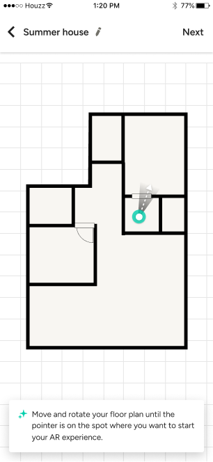
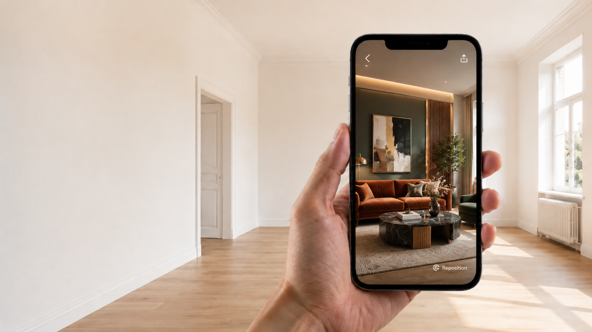
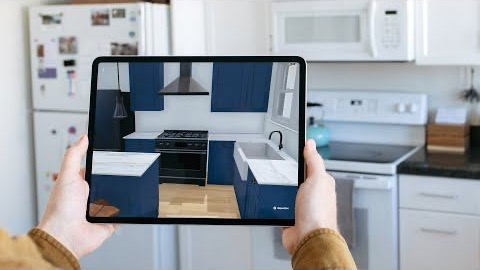

A proposal can be clear on paper and still be hard to grasp at full scale. Plans and renders showed the design, but left clients to imagine standing inside it. AR brought the proposal into the real room - a shared view pros and clients could react to together.
Plans and renders could show the proposal, but clients still had to imagine how it would feel inside the actual space.
I can understand the plan, but I still have to imagine what it means in this room.
Interior designer · discovery
The insight
Clients didn't need another render. They needed to stand inside the proposal.
The missing piece wasn't detail - it was scale. Seeing the design in the real room turned imagination into a shared reference.
The goal
Make the proposal feel real - so clients could understand, discuss, and trust it faster.
As AR grew more accessible and competitors adopted it, we saw a chance to make Houzz Pro's floor plans tangible and useful on site.
01
AR was becoming a more common part of spatial planning tools.
02
Users could view the design inside the actual room, not only as a flat plan or render.
03
Pros could discuss design decisions with clients while standing in the space itself.
Pros launched AR from the floor plan list, chose a starting point, aligned the digital plan with the real space, and previewed the design in AR.
Getting the plan to sit correctly in the room was the core challenge. I anchored the model to a fixed user position and let the digital plan rotate until it matched their real-world view - geolocation for broad context, the position marker and viewing direction for precise alignment.
Once the starting point was aligned, users scanned the room and adjusted the virtual walls to match the physical space.

Precise alignment made the proposal credible, but every extra setup step pulled the pro away from the client. The goal: the least calibration needed for a stable, convincing result.
01 · Believable
02 · Lightweight
Scale, alignment, and spatial trust can't be judged in static prototypes, so we tested on-device and in real rooms throughout.
01
Orientation, alignment, and recovery issues that static screens couldn't reveal.
02
Checked whether people understood the setup and trusted the spatial result.
03
Observed whether AR supported the conversation instead of interrupting it.
04
Tracked whether the feature was being adopted in real project work.
AR gave pros and clients one thing to inspect, react to, and discuss together, right there in the room.
The conversation moved from translation to decision - both sides looking at the same spatial view.

When we're both looking at the same spatial reference, the conversation becomes more concrete.
Pro · on-site client demo
Spatial experiences live or die on a careful balance between believability and effort.
01
The result has to feel aligned enough with the real room for clients to trust it.
02
Precision matters, but calibration can't take over and become the experience itself.
03
Ask only for the input needed to place the proposal convincingly, then step back so the conversation stays on the design.